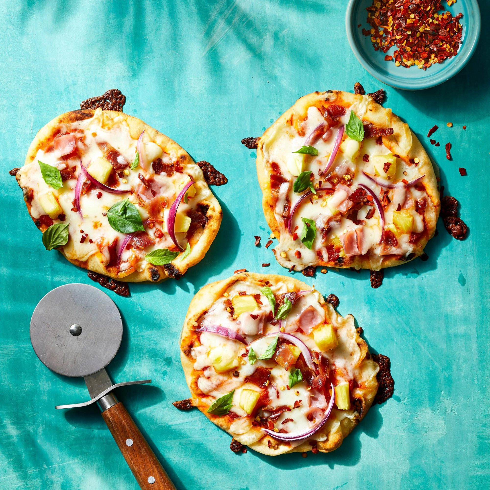

Mini Naan Hawaiian Pizza

Description
I know there are hardcore Italian pizza eaters out there who vow to never eat a Hawaiian pizza. And although sweet, juicy pineapple and ham may not be traditional pizza, just one time, step outside the box and see what you're missing. It's good, really good, and quick and easy!
Ingredients
- ½ cup pizza sauce
- 4 small naan breads
- 1 ½ cups shredded mozzarella cheese
- ¼ cup and 1 tablespoon and 1 teaspoons pineapple tidbits, well drained
- 2 slices deli ham, cut into bite-sized pieces
- 2 slices cooked bacon, crumbled
- 1 thin slice red onion, peeled and cut into chunks
Steps
- Preheat the oven to 400 degrees F (200 degrees C). Line a baking sheet with foil.
- Spread pizza sauce on naan breads and sprinkle with mozzarella cheese. Top with pineapple tidbits, ham, bacon, and red onion. Place on the prepared baking sheet.
- Bake in the preheated oven until crust is golden brown and cheese has melted, about 10 minutes.
Cook's Notes:
Use mini naan breads that are about 5 to 6 inches in size.
You can use fresh or canned pineapple. For variation, you can marinate the pineapple in hot sauce (such as Sriracha) for about 30 minutes, drain, and then proceed with preparation.